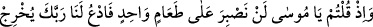
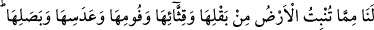
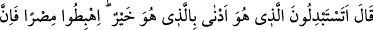
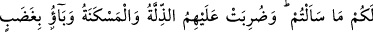
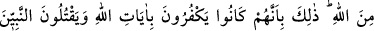
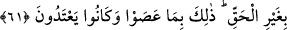

lider ve komutanın sevk ettiği kaynağa gider. Kimi kaynaklar soğuk ve tatlı, kimisi
tuzludur. Nefis, kuruntu ve şehvet pınarlarına koşar; kalb, takvâ ve tâat pınarlarından
içer. Rûh ise keşf, müşâhede ve hakâik pınarlarından dökülen ilâhî sırlara rağbet eder.
Sıfat-ı ilâhiyyenin tecellî kâseleriyle mârifetin hayat suyundan içer. Bunu onlara Rableri
içirir; içlerini temizler, ıslah eder. Rableri onları zâtının hakîkatında izmihlâl şarabıyla
sular.
Herbiriniz Allah’ın rızası ve emriyle onun nimetlerinden yeyip içiniz. Onun emirlerini
terkedip günahı tercih ederek, dünyâyı dîninizle ve âhıretinizle değişerek, bunları da
Rabbinize tercih ederek yeryüzünde bozgunculuk yapmayın. et-Te’vîlâtü’n-
Necmiyye’de böyle denilmiştir.
61. Hani siz (verilen nimetlere karşılık): Ey Mûsâ! Bir tek yemekle yetinemeyiz;
bizim için Rabbine duâ et de yerin bitirdiği şeylerden; sebzesinden, hıyarından,
sarımsağından, mercimeğinden, soğanından bize çıkarsın, dediniz. Mûsâ ise: Daha
iyiyi daha kötü ile değiştirmek mi istiyorsunuz? O halde şehre inin. Zira
istedikleriniz sizin için orada var, dedi. İşte (bu hâdiseden sonra) üzerlerine
aşağılık ve yoksulluk damgası vuruldu. Allah’ın gazabına uğradılar. Bu musîbetler
(onların başına), Allah’ın âyetlerini inkâra devam etmeleri, haksız olarak
peygamberleri öldürmeleri sebebiyle geldi. Bunların hepsi, sadece isyânları ve
taşkınlıkları sebebiyledir.
Burada İsrâîloğulları’nın atalarının Allah’ın nimetlerine karşı diğer bir cinâyet ve
nankörlükleri hatırlatılmaktadır. Rasûlullah’ın muâsırları atalarının yerine konularak
hitâb edilmiştir. Çünkü aynı kafadadırlar. Onların dedikleri şuydu: “Tîh çölünde
devamlı kudret helvası ve bıldırcın eti yemekten bıktık. Zira o iki yiyecek
değişmiyordu.” İnsan ise belli bir şeyi devamlı yerse ondan bıkar. Daha önce çiftçi olan
İsrâîloğulları eski hayatlarını hatırladılar ve akıllarından Mısır’a geri dönmeyi bile
geçirmeye başladılar. Yeme içme husûsunda eski alışkanlıklarını ve huylarını özlediler.
“Ey Mûsâ! Biz tek yemek yemeğe dayanamayız!” dediler.